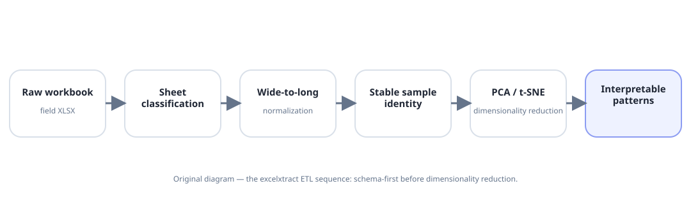

Complexity eventually exceeds manual reasoning.
Gene-activity tables, interaction screens, plant images, weather time series and field records all look different, but they're the same underlying problem: how do you pull a clear pattern out of a huge, messy dataset without losing what the experiment actually measured?
Computation was a response to scale.
Transcriptomics
RNA-seq measures which genes are active in a sample and by how much, turning a plant's molecular response into a large table that can be compared across varieties, treatments, tissues and time.
Phenotyping
At ITQB NOVA, automated image-analysis code replaced manual measurement of plant photos, cutting that manual effort by roughly 80% and turning thousands of images into consistent, measurable plant traits — leaf area, growth rate, and so on — at full experiment scale.
Field data
Field spreadsheets track the same plants across many developmental stages over time — which only becomes useful data once every row is reliably tied back to the right plant, cleaned up consistently, and processed the same way every time.
From “data cleaning” to scientific identity.
The core lesson here is simple to state and easy to get wrong in practice: every measurement needs to stay traceable back to the exact same plant, every time it's measured. The open-source excelxtract project builds that guarantee into the pipeline — it converts messy, multi-sheet field-observation spreadsheets into clean, analysis-ready data, with a permanent ID for every individual plant.

excelxtract
Automatically extracts and standardizes agricultural field-observation data, keeping a stable identity per plant so the same individual can be tracked reliably across an entire growing season.
View repository →A number isn't evidence unless you can explain where it came from.
That becomes one of AidBio's core design rules: every step of a pipeline should keep enough of a paper trail that you could reconstruct exactly what was measured, how it was transformed, and how a final conclusion was reached — not just trust the last number on the screen.